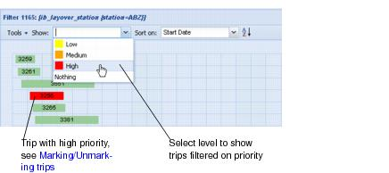

Viewing marked trips To view marked trips in the Trip work area: • In the Gantt chart, trips are marked with the marker colour corresponding to the marker level. • In the Table view, trips are marked with a marker in the Mark column.